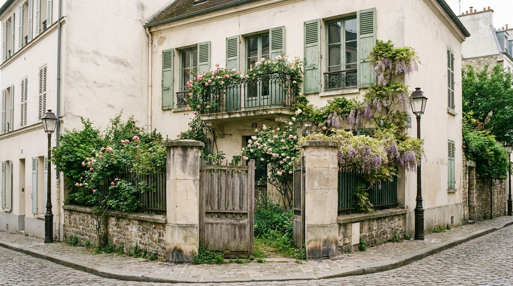
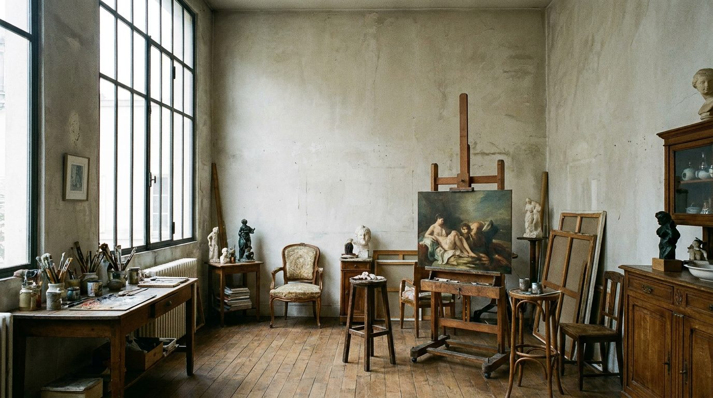

Atlante · FR-04 · Francia · Île-de-France
Atelier d'artiste a Montmartre
Esempi · esterno e interno


Perché funziona
contrasto perfetto per arredamento "morbido" (divani, ceramiche, tessuti): pareti vissute, luce nord, oggetti. Meno formale, più editoriale.
Architettura · elementi riproducibili
- Vetrata alta a nord, 3–5 m, con intelaiatura in ferro; HSP 4–5 m
- Pareti a calce o gesso grezzo, patina irregolare, travi a vista
- Pavimento a doghe larghe 15–20 cm, verniciato opaco o grezzo
- Poêle in ghisa, tavolo da lavoro macchiato di pigmento, plinti, tele appoggiate
Luce
nord puro, uniforme, senza sole diretto; 6000–6500 K percepiti; ombre quasi assenti, materia leggibile.
Prompt di generazione (EN)
Artist's atelier in Montmartre, 4.5 m ceiling, tall north-facing iron-framed window, lime-washed plaster walls with patina, exposed beams, wide worn oak floorboards, cast-iron stove, paint-stained worktable, linen armchair, canvases stacked against the wall. Flat cool north light, no direct sun, soft shadows, 6200 K. 35 mm lens, f/4, tripod at 1.4 m, three-quarter view, slightly warm white balance offset, natural colour, no people, 4:5.
Errori tipici da controllareatelier "instagrammabile" troppo pulito; finestre che diventano enormi vetrate da loft; oggetti generici (cavalletti vuoti, tavolozze) ripetuti.